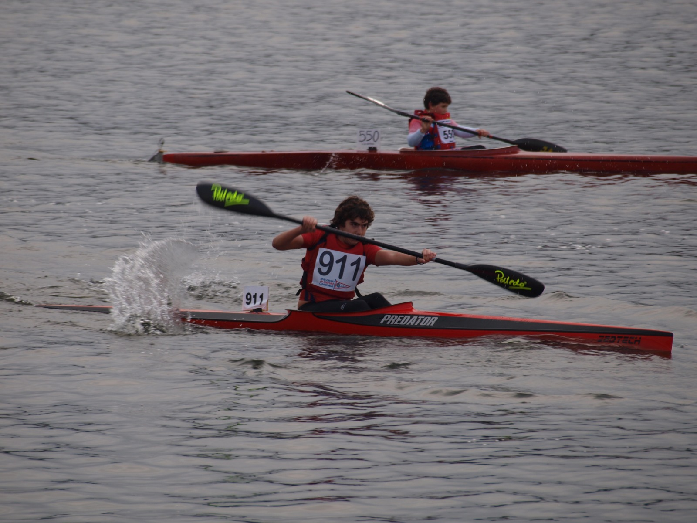

Una etapa
sobre el agua.
Hace años que no practico piragüismo, pero mi paso por el K1, el K2 y el K4 sigue siendo una parte importante de mi historia.
El deporte que practiqué
Cuando pienso en mi deporte favorito, pienso en el piragüismo. Lo practiqué durante una etapa de mi vida en las modalidades K1, K2 y K4. Hace años que no lo hago, así que esta página habla de una experiencia pasada, no de una actividad que siga formando parte de mi rutina actual.
Es una distinción importante para contar mi historia tal como es. Una afición no deja de tener significado porque ya no la practiquemos. El piragüismo sigue siendo el deporte que elijo para hablar de mí, aunque hoy mi día a día transcurra lejos de la competición.

Del K1 al K4
Estas tres modalidades tienen algo en común: se practican en kayak. En K1 la embarcación es individual; en K2 la comparten dos palistas; en K4, cuatro. El número cambia la manera de entender lo que ocurre dentro del barco.
En las embarcaciones de equipo, el esfuerzo de cada persona tiene que encajar con el de las demás. La coordinación forma parte del movimiento. Ese contraste entre la responsabilidad individual y el trabajo compartido ayuda a explicar la variedad que encontré en este deporte.
Un subcampeonato en Sevilla
Fuimos subcampeones de España en K4, en Sevilla.
Ese resultado lo conseguimos con el Real Grupo de Cultura Covadonga, el RGCC. Es el logro que quiero destacar de aquella etapa y, sobre todo, un resultado que se cuenta en plural: competíamos en una embarcación de cuatro.
No hace falta convertir el recuerdo en un palmarés extenso. Basta con ese momento para explicar por qué el piragüismo merece una página propia en esta web. El club, las modalidades que practiqué y aquel subcampeonato son los puntos que definen esta parte de mi recorrido.